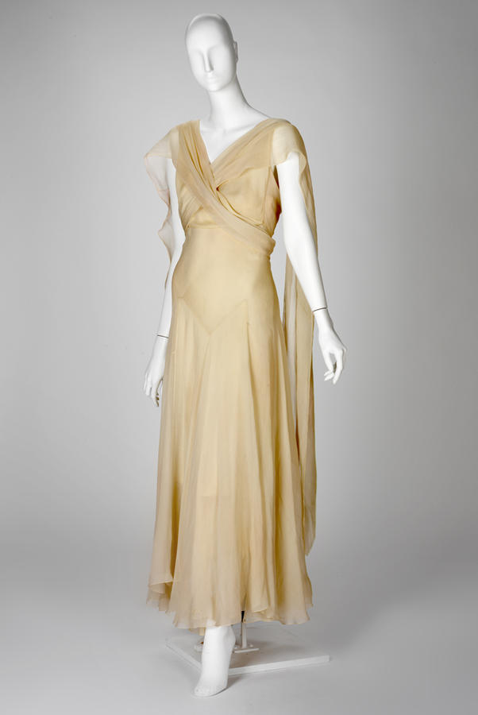
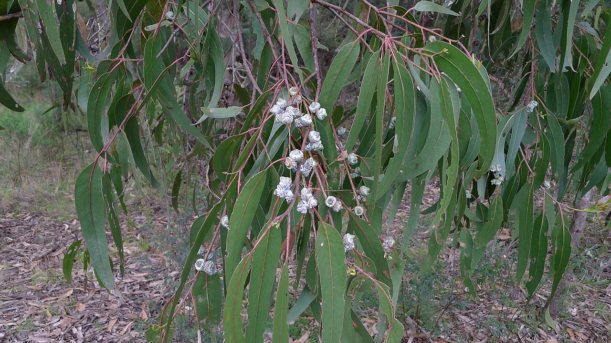
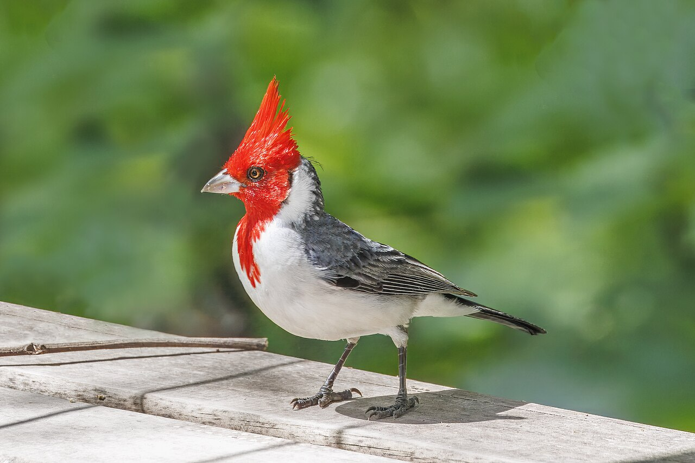
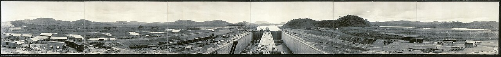

Lula.
diario de la mañana — el mundo, tu ciudad y lo que te asombra

Buen día. Vuelve la inestabilidad: 17° a 21°, con un frente frío que deja lluvias débiles y la probabilidad subiendo a la noche. Día cargado afuera —vota Estados Unidos— y acá el riesgo país cruzó por primera vez en el año los 800 puntos. La ciencia de hoy es clínica y linda: la primera pastilla que muestra, en fase 3, que puede devolverle el color a la piel en el vitíligo.
- El mundo en cinco minutos3'
- Argentina y Buenos Aires2'
- Ciencia: devolverle el color a la piel7'
- Mirá a tu alrededor2'
- Receta de estación2'
- La palabra del día1'
- Le français du matin2'
- English corner3'
- Martes de moda: Vionnet4'
- Hoy en la historia · un lugar2'
- Lo que me asombra hoy1'
- Pasatiempo: sudoku fácil10'
- Cuaderno: repaso, quiz y escritura4'
Estados Unidos vota hoy sus elecciones de medio término
Se renuevan la Cámara de Representantes entera y un tercio del Senado, y las encuestas que cita EFE ponen a los demócratas en condiciones de quedarse con las dos cámaras. Para la Argentina el canal es financiero: un Congreso que puede frenar o habilitar gasto cambia las expectativas sobre el déficit estadounidense, eso mueve al bono del Tesoro a diez años, y ese bono es la referencia contra la que se mide lo que pagamos por endeudarnos.
Y además: el Consejo de Seguridad de la ONU y la Asamblea General votan hoy, en simultáneo, cinco de los quince jueces de la Corte Internacional de Justicia. Se inaugura en Wuzhen la Conferencia Mundial de Internet, con la inteligencia artificial como tema central. Y se cumplen diez años de la entrada en vigor del Acuerdo de París: la negociadora Laurence Tubiana, que fue clave en aquel acuerdo, le resumió la década a EFE como «una década mala».
El riesgo país pasó los 800 puntos por primera vez en el año
Cerró en 805 puntos, un 2,3 % arriba, y es el primer cruce de esa barrera en 2026. Las acciones argentinas en Wall Street cayeron fuerte —IRSA perdió cerca del 13 %— y el dólar acompañó: el mayorista terminó en $1.545,50, el minorista del Banco Nación en $1.565, el contado con liquidación arriba de $1.650 y el dólar tarjeta por encima de $2.030.
El dato que ordena todo lo demás: una estimación que circuló ayer atribuye cerca del 60 % del riesgo país actual al factor electoral local —no a Brasil, no a la tasa estadounidense—. Es decir: el mercado está poniéndole precio a 2027 con un año y pico de anticipación, y mientras tanto encarece el financiamiento de todo, del Estado y de las empresas.
Del otro lado del mostrador hubo un número mejor: la recaudación de octubre llegó a $21,6 billones, un 33,7 % más que un año atrás en términos nominales, el segundo mes consecutivo que le gana a la inflación. Traducido: la actividad se está moviendo, aunque el financiamiento esté caro.
Para hacer en la ciudad
- Viene el Papa: el Vaticano confirmó la gira de León XIV por Uruguay, Argentina y Perú entre el 6 y el 17 de noviembre. Es la primera visita papal al país desde 1987, así que preparate para una ciudad cortada.
- Plan de tarde de lluvia: el Museo Nacional de Bellas Artes (Libertador 1473) es de entrada libre y gratuita, y está a una cuadra del Museo de Arte Decorativo.
Una pastilla que le devuelve el color a la piel: vitíligo en fase 3
De qué estamos hablando: el vitíligo es una enfermedad autoinmune en la que los linfocitos T CD8⁺ matan a los melanocitos, las células que fabrican el pigmento. Queda piel despigmentada, en parches, muchas veces en la cara y las manos. No duele y no mata, y por eso durante décadas se lo trató como un problema cosmético; en la práctica es una enfermedad con un impacto enorme en la vida de la gente y casi sin tratamientos buenos. Este trabajo de Nature Medicine publica los resultados a 52 semanas de dos ensayos de fase 3 con una pastilla.
Quién es quién
- Melanocito: la célula de la capa basal de la epidermis que sintetiza melanina y se la pasa a los queratinocitos vecinos en paquetitos (melanosomas). Un melanocito «abastece» a unas treinta células de piel.
- El eje que lo rompe: los T CD8⁺ autorreactivos liberan interferón γ; el interferón γ hace que los queratinocitos produzcan CXCL9 y CXCL10, quimiocinas que atraen más linfocitos al mismo lugar. Es un círculo que se alimenta solo, y explica por qué las manchas crecen por el borde.
- JAK: las quinasas Janus, las proteínas que transmiten hacia adentro de la célula la señal de muchos receptores de citoquinas —entre ellos el del interferón γ— activando factores STAT. Bloquear JAK es cortar ese cable.
- Povorcitinib: un inhibidor oral y selectivo de JAK1. La selectividad importa: los inhibidores que además pegan en JAK2 bajan plaquetas y glóbulos rojos, porque JAK2 es la vía de la eritropoyetina y la trombopoyetina.
- F-VASI75: el criterio de valoración. VASI es un índice de superficie afectada; la F es de facial y el 75 quiere decir «mejoró al menos un 75 % en la cara». T-VASI es lo mismo para el cuerpo entero.
Qué encontraron
- Dos ensayos gemelos, STOP-V1 y STOP-V2, aleatorizados, doble ciego y contra placebo, en adultos con vitíligo no segmentario moderado a grave, con povorcitinib 30 mg una vez por día durante 52 semanas.
- Cumplieron el objetivo primario: más pacientes alcanzaron F-VASI75 con la droga que con placebo, en los dos ensayos. Las cifras que circularon en la cobertura rondan el 19 % con tratamiento contra 3 a 7 % con placebo.
- El cuerpo entero es más difícil: en el objetivo de cuerpo completo (T-VASI75) uno de los dos ensayos mostró diferencia significativa y el otro no. La cara responde mejor —tiene más folículos pilosos, que son el reservorio desde el que los melanocitos repueblan la piel—.
- El laboratorio ya anunció que va a presentar la droga a las agencias regulatorias en la primera mitad de 2027.
Lectura crítica
- Un 19 % no es mucho, y es muchísimo. Significa que cuatro de cada cinco pacientes no llegan al umbral; también significa que, por primera vez, hay un tratamiento sistémico con evidencia de fase 3 en una enfermedad que no tenía nada. Las dos lecturas son verdaderas.
- Ojo con los números que leas por ahí: las notas de prensa que encontré se contradicen entre sí sobre qué porcentaje corresponde a cada ensayo. Yo no vi el paper completo; si lo vas a citar, sacá las cifras de la tabla, no de la gacetilla.
- 52 semanas es poco para una enfermedad crónica. Las preguntas que faltan: ¿se mantiene?, ¿qué pasa al suspender?, ¿y la seguridad a largo plazo? Los inhibidores de JAK arrastran advertencias de clase por eventos cardiovasculares, trombosis e infecciones, basadas sobre todo en estudios con otra droga y en población reumatológica.
- Y el detalle fino: repigmentar no es lo mismo que frenar. Un tratamiento puede detener el avance sin devolver color, y para el paciente son dos cosas distintas. Vale la pena mirar los dos resultados por separado.
La conexión con lo que estudiás
Acá se ve, completo, el camino que va de inmunología a farmacología: alguien describe un eje (interferón γ → CXCL9/10 → más linfocitos), alguien identifica la quinasa que lo transmite, y alguien diseña una molécula que la bloquea. Ese es el modelo de «terapia dirigida» que reemplazó a la inmunosupresión general. Y tiene su contracara, que también vale aprender: cuanto más selectiva es la molécula, más probable es que funcione en una enfermedad y no en la de al lado, porque las vías están compartidas pero no son idénticas.
«Povorcitinib for nonsegmental vitiligo: two randomized, controlled, phase 3 STOP-V trials». Nature Medicine, 2 de noviembre de 2026, doi:10.1038/s41591-026-04739-2 · ensayos NCT06113445 y NCT06113471
Biotec en el mundo real · El laboratorio textil del INTI
Como hoy es martes de moda, va un laboratorio que casi nadie asocia con la biotecnología: el centro de textiles del INTI (Instituto Nacional de Tecnología Industrial), en Parque Tecnológico Miguelete.
- Qué hacen: identificar fibras —microscopía, solubilidad diferencial, infrarrojo—, medir solidez del color al lavado, al sudor y a la luz, resistencia a la tracción y al pilling, y verificar que la etiqueta diga la verdad.
- Dónde entra la biotecnología: en el acabado enzimático. Las celulasas hacen el «stone-wash» del jean sin piedra pómez, comiéndose las fibrillas superficiales; las amilasas sacan el apresto de almidón; las pectinasas y lipasas reemplazan al descrude con soda cáustica. Cada enzima que entra evita toneladas de químicos y litros de agua caliente.
- Y la frontera: teñido con pigmentos de microorganismos y fibras obtenidas por fermentación, un campo donde ya hay empresas argentinas trabajando.
- Salida laboral: ensayos y certificación, química analítica aplicada, desarrollo de procesos enzimáticos, sustentabilidad y normas.
Ciencia en la vida cotidiana · Por qué el bronceado es una cicatriz
Cuando la UV llega a la piel pasan dos cosas distintas. Lo inmediato —ese tono que aparece a las horas y se va rápido— es oxidación de melanina que ya estaba, sin fabricar nada nuevo. Lo que dura es otra historia: el daño en el ADN del queratinocito activa p53, que hace producir α-MSH, que le ordena al melanocito fabricar más melanina y repartirla. Es decir, el bronceado tardío es, literalmente, la respuesta a un daño genético: la piel se pone un paraguas después de haberse mojado.
El dato que sirve: el factor de protección que da un bronceado ya hecho es bajísimo, del orden de 3 o 4. No reemplaza al protector, y la idea de «tomar un poco de sol para prepararse» no tiene respaldo: lo que preparás es el daño.
El eucalipto, que se defiende con química, y el cardenal



_Costanera_Sur.jpg){kind=link}
El árbol: eucalipto
| Nombre científico | Eucalyptus spp. (Mirtáceas, como el calistemo). Australiano. En la provincia hay cortinas enteras plantadas desde el siglo XIX, y en la ciudad aparece en parques grandes. |
|---|---|
| Cómo reconocerlo | La corteza que se desprende en tiras, el olor al romper una hoja y, sobre todo, la heterofilia: las hojas juveniles son redondeadas, opuestas y azuladas, y las adultas, alargadas, alternas y colgantes. En un mismo árbol podés ver las dos. |
| La química | El aceite esencial es casi todo eucaliptol (1,8-cineol), y no está ahí para el jarabe para la tos: es un herbicida. Se acumula en el suelo e inhibe la germinación de otras plantas —alelopatía—, y es tan volátil e inflamable que en verano los incendios australianos avanzan por las copas. El árbol rebrota después; sus vecinos no. |
El ave: cardenal común
| Nombre científico | Paroaria coronata (Tráupidos, la familia de las tangaras: no es pariente del cardenal del hemisferio norte). |
|---|---|
| Cómo reconocerlo | Gris arriba, blanco abajo, y la cabeza entera roja con un copete puntiagudo. Anda en pareja o en grupitos, en el suelo, en parques y bordes de ciudad. |
| Lo asombroso | El rojo no lo fabrica: lo come. Son carotenoides de la dieta, que el ave transforma y deposita en la pluma. Como no puede sintetizarlos, el color funciona como una señal honesta de que ese individuo come bien y está sano. Fue, justamente por lindo, una de las especies más capturadas para jaula, y eso lo volvió raro en buena parte de su área. |
Mayonesa casera, y una ensalada de papa para usarla
Cinco minutos de mayonesa, veinte de ensalada. Y entender por qué se corta.
Ingredientes
- 1 huevo entero a temperatura ambiente
- 200 ml de aceite neutro (girasol o maíz)
- 1 cucharadita de mostaza, jugo de medio limón, sal
- Ensalada: 4 papas, 2 huevos duros, 1 cebolla de verdeo, perejil
Pasos
- Huevo, mostaza, limón y sal en un vaso alto. Aceite arriba, sin mezclar.
- Minipimer apoyada en el fondo, a máxima velocidad, sin mover. Cuando emulsiona abajo, subí despacio.
- Herví las papas con cáscara, enteras, 20 minutos; pelalas en caliente y cortalas en cubos.
- Mezclá tibias con la mayonesa, el huevo duro picado, el verdeo y el perejil.
La química de la receta
Qué es una mayonesa: una emulsión aceite-en-agua. El aceite no se disuelve en el agua de la yema; lo que hace es romperse en gotitas de unos pocos micrones que quedan suspendidas. Lo que impide que se vuelvan a juntar es la lecitina de la yema, un fosfolípido anfipático: una cabeza polar que mira al agua y dos colas que se meten en el aceite. Cada gotita queda envuelta en esa capa. Por eso una mayonesa bien hecha tiene más del 70 % de aceite y aun así es «agua afuera, aceite adentro».
Por qué se corta y cómo se arregla: si tirás el aceite demasiado rápido, no hay suficiente lecitina disponible por unidad de superficie y las gotitas coalescen: la emulsión se invierte y queda un aceite con grumos. Se arregla empezando de nuevo con una yema en otro bol y agregándole la mezcla cortada de a poco, como si fuera el aceite. La mostaza ayuda doble: aporta mucílagos que espesan la fase acuosa y partículas finas que estabilizan la interfase.
Y la papa tibia: absorbe mejor. El almidón recién gelatinizado todavía tiene la estructura abierta y toma el aderezo; fría y retrogradada, lo rechaza y la ensalada queda seca con la mayonesa por encima. Ojo con el huevo crudo: si la vas a dejar varias horas fuera de la heladera, o si se la vas a dar a alguien de riesgo, usá huevo pasteurizado.
bies sustantivo
provenzal/francés antiguo biais (oblicuo, de través) → francés biais → castellano bies (costura) y sesgo · inglés bias
La misma palabra viajó por dos caminos y terminó en dos vocabularios que parecen no tener nada que ver. En costura, cortar al bies es cortar en diagonal respecto del hilo de la tela, a 45 grados de la urdimbre. En inglés, bias quiere decir prejuicio o sesgo; en estadística, la diferencia sistemática entre lo que medís y lo que es cierto. Las dos vienen de lo mismo: estar torcido respecto de una dirección de referencia.
Y la metáfora es más exacta de lo que parece. Una tela tejida no es isótropa: resiste distinto a lo largo del hilo, a lo ancho y en diagonal. Al bies, la trama se deforma como un pantógrafo y la tela se estira aunque sus fibras no tengan elastano. Un sesgo estadístico hace exactamente eso con los datos: los estira en una dirección. En los dos casos, lo que cambia no es el material sino el ángulo desde el que se lo toma.
Je peux l'essayer ?
— Bonjour, je cherche une robe noire.
— Quelle taille faites-vous ?
— Du 38. Je peux l'essayer ?
— Bien sûr, la cabine est au fond.
| je cherche… | busco… [she SHERSH] |
|---|---|
| quelle taille ? | ¿qué talle? [kel TAI] |
| je peux l'essayer ? | ¿me lo puedo probar? [she pö le-se-YE] |
| au fond | al fondo [o FON] |
Un truco
Mirá la construcción quelle taille faites-vous: en francés el talle no se «usa», se hace. Igual que la edad no se «tiene»… salvo que sí: j'ai 23 ans, ahí sí se tiene. Son colocaciones, y son lo que más delata a un extranjero: no se deducen, se memorizan de a pares. Anotá siempre el verbo junto al sustantivo, nunca solo.
What "it worked" means in a trial
A headline reporting that a drug "works" is making a far narrower claim than it appears to. What the trial established is that, on a pre-specified measure, at a pre-specified moment, a pre-specified proportion of patients crossed a threshold more often than the ones who took nothing. Change any of those three and the sentence may stop being true. This is not pedantry: the threshold is a choice, and it was made by people who had a reason to choose it.
The convention cuts both ways. A demanding endpoint makes a genuinely useful treatment look weak, because the patients who improved substantially but fell short of the cut-off are counted as failures. A lenient one flatters a drug that changes little. Readers who only ever see the percentage have no way of telling which situation they are in, and press releases are not written to help them.
The remedy is unglamorous and reliable: find out what the endpoint actually measured, over what period, against what comparator, and in whom. Four questions, rarely answered in the first paragraph and almost always answered in the paper.
- a claim — una afirmación
- pre-specified — definido de antemano
- a threshold — un umbral
- pedantry — pedantería, puntillosidad
- to cut both ways — cortar para los dos lados
- demanding / lenient — exigente / indulgente
- to flatter — favorecer, hacer quedar mejor de lo que es
- a comparator — el grupo o tratamiento con el que se compara
Madeleine Vionnet: la que trató a la tela como un material con dirección
Madeleine Vionnet (1876-1975) empezó a trabajar de aprendiza de costura a los once años, abrió su casa en París en 1912 y la cerró en 1939, cuando llegó la guerra. En medio hizo algo que la vuelve la modista más influyente del siglo XX entre las que casi nadie nombra: dejó de construir la ropa sobre el cuerpo —pinzas, ballenas, corsé— y empezó a hacer que la tela cayera sola.
Qué inventó, concretamente
- El corte al bies. Cortar a 45° del hilo de la tela. Un tejido no da lo mismo en todas las direcciones: a lo largo de la urdimbre casi no cede, a lo ancho un poco, y en diagonal los hilos se reorganizan como un enrejado y la tela se estira y se adapta sin ningún elástico. Vionnet no lo inventó de la nada —se usaba en detalles—, pero fue la primera en cortar el vestido entero así.
- Consecuencias: un vestido que se pone por la cabeza, sin cierre; que se ajusta al cuerpo moviéndose con él; y que, colgado en una percha, parece una tela informe. Los museos tienen problemas serios para exhibir Vionnet: sin cuerpo adentro, la ropa no existe.
- El maniquí chico. Trabajaba drapeando sobre una muñeca articulada de 80 cm, y recién después escalaba. Pensaba en volumen, no en plano; es diseño tridimensional cincuenta años antes de que se llamara así.
- La geometría: sus patrones son cuadrados, rectángulos y cuartos de círculo; lo complicado no es la forma de las piezas sino cómo se orientan respecto del hilo. Mecánica de materiales anisótropos, resuelta con tijera.
Y la parte que nadie cuenta
Vionnet fue, además, una patrona rarísima para su época: en los años veinte su casa ya tenía consultorio médico, dentista, guardería y comedor para las empleadas, vacaciones pagas y licencia por maternidad, mucho antes de que fueran ley en Francia. Y peleó durante años contra la copia: registraba cada modelo con fotos de frente, perfil y espalda, y firmaba los vestidos con su huella digital en la etiqueta.
Su idea era que el vestido debía seguir al cuerpo, no al revés. Cien años después, toda la ropa que te queda bien «sin saber por qué» le debe algo a esa tijera en diagonal.
3 de noviembre de 1903: Panamá se independiza, y nace el canal
Panamá era una provincia de Colombia. Cuando el Senado colombiano rechazó el tratado que le daba a Estados Unidos el control de la franja donde iba a ir el canal, un grupo de panameños declaró la independencia con apoyo abierto de Washington: barcos estadounidenses impidieron el desembarco de tropas colombianas y el reconocimiento diplomático llegó en tres días. Dos semanas después se firmó el tratado que cedía la Zona del Canal «a perpetuidad». El canal se inauguró en 1914 y recién en 1999, con los tratados Torrijos-Carter, pasó a manos panameñas.
La obra se había intentado antes, con los franceses de Lesseps, y fracasó: más de 20.000 muertos, la mayoría por malaria y fiebre amarilla. Lo que hizo posible el canal no fue la ingeniería sino la epidemiología: entender que el vector era el mosquito y atacar el agua estancada.
El lugar: el canal de Panamá

| Qué es | 82 km entre dos océanos, pero no a nivel del mar: los barcos suben 26 metros hasta el lago Gatún con tres juegos de esclusas y después bajan del otro lado. El agua sale de la lluvia, no del mar. |
|---|---|
| El problema de hoy | Cada barco que pasa «gasta» unos 200 millones de litros de agua dulce, que terminan en el océano. Con las sequías de los últimos años, la autoridad del canal tuvo que limitar los cruces diarios: un cuello de botella del comercio mundial que depende, literalmente, de cuánto llueve en un lago. |
| El dato | Es una de las pocas obras donde se puede decir que la salud pública fue la tecnología habilitante. Sin el control del mosquito, no había canal. |
Tu piel es del color de unos paquetitos que una célula le regala a las otras
El dato que más me gusta de la piel: todos tenemos aproximadamente la misma cantidad de melanocitos. Una piel muy oscura y una muy clara tienen el mismo número de células pigmentarias por centímetro cuadrado. Lo que cambia es lo que esas células hacen: el tipo de melanina (eumelanina marrón-negra contra feomelanina rojiza-amarilla), el tamaño de los melanosomas y, sobre todo, qué pasa con ellos después.
Porque el melanocito no se queda el pigmento: lo reparte. Extiende prolongaciones entre los queratinocitos vecinos y les entrega los melanosomas, que ellos acomodan como una sombrilla justo encima del núcleo. En pieles claras esos paquetitos se degradan rápido; en pieles oscuras se mantienen enteros y dispersos. El color es, en buena medida, una diferencia en la vida media de un paquete.
Y de ahí la crueldad del vitíligo: no es que falte pigmento, es que falta el repartidor. Mueren los melanocitos de un parche y las células de alrededor se quedan sin su entrega, sin sombrilla y sin color, en una piel que por lo demás está perfectamente sana.
El del martes
Repaso y quiz de la mañana
Repaso de idiomas
Quiz
En el vitíligo, lo que se destruye son…
¿Por qué sirve bloquear JAK1?
¿Qué midió el objetivo primario del ensayo?
¿Qué mantiene unida a una mayonesa?
Cortar «al bies» significa cortar…
Lo que hizo posible terminar el canal de Panamá fue…
Entre una piel clara y una oscura, lo que cambia es…
Escritura
- Quiz: los melanocitos · corta la señal del interferón γ · F-VASI75 · la lecitina · en diagonal a 45° · el mosquito · el tipo de melanina y la vida media de los melanosomas.
- Repaso: combien ça coûte ? · je cherche une robe noire · je peux l'essayer ? · un umbral · favorecer, hacer quedar mejor · el grupo con el que se compara.
- Francés: por ejemplo, «Je cherche un manteau. Je fais du 38. Je peux l'essayer ?»
Sudoku:
Fuentes de esta edición
- Mundo: Temas del día de EFE Internacional
- Mercados: La Capital: el riesgo país superó los 800 · Infobae: los tres factores · Ámbito: el dólar hoy
- Clima: La Nación, con datos del SMN
- Ciencia: Nature Medicine: povorcitinib en vitíligo, ensayos STOP-V · INTI
- Moda e historia: Vionnet en el Metropolitan · Britannica: el canal de Panamá
Mañana, miércoles: letras argentinas. — Lula.